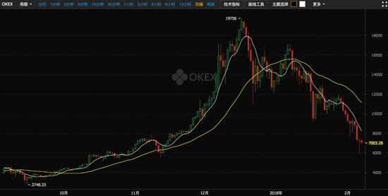

一、我们要做什么？
我们要做的是一个开源的数字资产银行系统。
任何国家和地区的人通过下载我们的源代码，就可以在互联网上搭建一个数字资产银行网站，通过各语言版本的插件为当地用户提供便捷的以数字货币为代表的数字资产保管服务。就像银行可以存钱，取钱一样，用户可以通过数字资产银行存取数字货币和其他数字资产。
因为数字资产可以直接在网上流通，所以用户开办的数字资产银行即使没有实体店铺，也可以开展网上数字资产的存取业务。
二、为什么人们会需要数字资产银行?
随着互联网和数字化进程的推进，人们将拥有越来越多有价值的数字资产，其中又以数字货币为主要形式。
由于数字货币管理的技术门槛较高，普通人保管数字货币即不专业也很不方便，容易丢失或被黑客盗取。主流数字货币比特币由于区块链大小限制，交易转账确认时间较长，且手续费较高。
数字资产银行内部转账可以在数字货币区块链外加速数字货币的流通，且通过身份认证等信息，更方便用户确认交易双方的实体资格。
由于数字货币种类较多，通过数字银行的数字货币代理，用户可以轻易实现任意数字货币间的兑换。如果当地法律和银行支持，通过数字银行的法币代理，用户可以实现当地法币对任意数字货币的兑换。
当全球各地使用相同开源代码创建的数字资产银行互相联通之后，用户可以便捷地进行任意数字货币和法币之间的转换，实现跨国支付和转账，降低国家与国家，地区与地区之间的交易摩擦和成本。
三、数字资产银行和数字货币交易所有什么不同?
与数字货币交易所主要的区别在于数字资产银行并没有下单的概念，用户无法设定在某个价位卖出或买入某种数字货币。
和普通可以进行外币兑换的银行一样，用户可以使用人民币在银行兑换美元，或者将美元兑换成人民币。因为无法设定固定价位的买单和卖单，所以人们不会把外币兑换银行称为外币交易所。
另外，虽然人们可以通过数字资产银行把法币兑换成数字货币，或者把数字货币兑换成法币。但与数字货币交易所不同的是数字银行会对客户的兑换操作收取较高的手续费，以遏制用户频繁交易的冲动。
由于数字货币大多是通缩发行的，与普通银行不同的是数字资产银行普遍会采用0利率，甚至负利率。因此数字资产银行可能还会收取用户数字资产的保管费用，而一般数字货币交易所不会收取这方面的费用。
数字银行不会像数字货币交易所那样提供期货或者杠杆，更适合保守型的投资者。

四、数字资产银行与数字货币钱包有什么不同?
数字货币钱包一般来说都是某个币种针对个人使用的软件，只适合同一数字货币间的转账，并不具备多币种兑换和法币兑换的能力。
而且数字货币钱包软件如果出现问题，或者用户使用不当，或者操作系统故障等因素，个人用户将面临数字货币丢失或被盗取的风险，一般来说钱包开发者并不会承担这些风险，而有实力的数字资产银行则可以承担这方面的风险。
五、数字资产银行的主要竞争对手和优势:
数字资产银行对标的主要对手是现有的各国法币的银行系统，主要用户是长期投资和拥有数字货币资产的普通用户。
刚性兑付保障优势：数字资产银行可以通过区块链技术向所有用户公开展示自己的兑付能力。而现有银行系统无法做到，只能依靠政府提供的信用担保或政策担保。
全球一体化优势：数字资产银行可以利用数字货币在区块链上公开公证的优势，数字资产银行间交互更加便利，互相联通之后可以为全球各地的用户提供一体化的金融平台，创建更高品质，更可信赖的金融服务。
传统银行的劣势：现有法币银行系统受国家政策和货币发行政策影响较大，系统技术老化陈旧，升级困难，组织膨胀，决策缓慢，不支持数字货币和数字资产，硬资产多，变革阻力大，市场竞争能力弱，各国银行间的交互失灵，海外竞争能力差。
六、为什么我们选择开源?
我们之所以选择开源代码，首先是因为开源代码最容易得到大家的信任，开源时间越长，代码的安全指数越高。
开源代码与银行需要得到用户信任的途径是一致的，第一是安全，第二是历史信誉。
目前，最安全最稳定，在服务器领域使用最广泛的计算机操作系统Linux就是开源的。
而且我们搭建的是一个分布式的银行系统，开源代码方便任何有数字银行需求的人，在任何国家和地区迅速高效地创建本地数字银行，为当地民众提供数字资产服务。
开源也意味着即使我们退出，依然会有感兴趣的程序员或相关利益者保证整个开源系统地不断优化，持续前进。
七、数字资产银行的盈利模式：
数字资产银行可以向用户收取一定的数字货币的管理费和充值，提现，转账手续费用。
首先，可以为需要的客户，以数字资产为担保，提供法币贷款，并收取法币为计价单位的手续费和利息。
其次，可以为客户保管数字货币以外的数字资产，并收取保管费用。并在客户发生意外和身故时，根据客户的个人认证信息，向客户的法定继承人转移客户数字资产。
八、数字资产银行的数字货币和法币代理商是如何操作的?
数字货币代理商通过向数字资产银行缴纳一定数额的数字货币作为保证金，并获得数字银行认可后，即可向该数字资产银行的用户提供保证金范围内的数字货币充值和提现操作。
九、数字货币代理商代理充值操作流程：
充值用户根据数字货币代理商在数字资产银行设定的充值汇率，将一定数量的数字货币发送到数字货币代理商指定的数字货币收款地址，数字货币代理商在确认收款后，将代理商在数字资产银行账户上的一部分余额划拨至充值用户账户上即完成一次数字货币代理充值操作。
十、数字货币代理商代理提现操作流程：
提现用户根据数字货币代理商在数字资产银行设定的提现汇率，将自己在数字资产银行账户上的一部分余额划拨至数字货币代理商的账户上，数字货币代理商在确认收款后，将指定数量的数字货币发送到提现用户指定的数字货币收款地址，即完成一次数字货币代理提现操作。
提现用户根据数字货币代理商在数字资产银行设定的提现汇率，将自己在数字资产银行账户上的一部分余额划拨至数字货币代理商的账户上，数字货币代理商在确认收款后，将指定数量的数字货币发送到提现用户指定的数字货币收款地址，即完成一次数字货币代理提现操作。
法币代理商与数字货币代理商操作类似，区别只是将数字货币收款地址更换为法币收款账户。HIVE BANKS项目也将为数字货币代理和法币代理提供相应的自动化工具方便与数字资产银行进行自动对接。